Folgt auf die nächste Kreuzung innerhalb von ca. 150 m gleich die übernächste, steht sie klein unter dem Hinweis („Danach in … m“) und ist schon wählbar. Sie folgt der gewählten Richtung an der ersten Kreuzung: wählst du dort Rechts, zeigt sie die Kreuzung auf dem rechten Ast; kommt auf dem gewählten Weg nichts, verschwindet sie.
Seit 0.16.1 hat die vorgewählte Hauptstraße die eigene Wahl kurz vor der Kreuzung wieder überschrieben, man fuhr trotzdem geradeaus (gemeldet an den Kälbersträuchern). Behoben, mit eigenem Test für diese Kreuzung (links, rechts, geradeaus).
An Kreuzungen ist jetzt die durchgehende Straße vorgewählt (gleicher Name, höhere Klasse, möglichst gerade), nur wer abbiegen will, drückt. Abzweige in Wege erscheinen dezent und erst kurz vorher. Wege und Nebenstraßen laufen bis an den Fahrbahnrand statt vor dem Grünstreifen zu enden. Nebenstraßen-Asphalt und Schotter ohne sichtbare Kachelwiederholung (Flecken, Flicken, Risse). Fahrer neigen sich in Kurven, das Vorderrad lenkt leicht ein. Gravel und MTB auf grobem Untergrund deutlich langsamer. Ab ca. 12 % zeitweise Wiegetritt.
Vorher: der Pfad rechts endet vor dem Grünstreifen
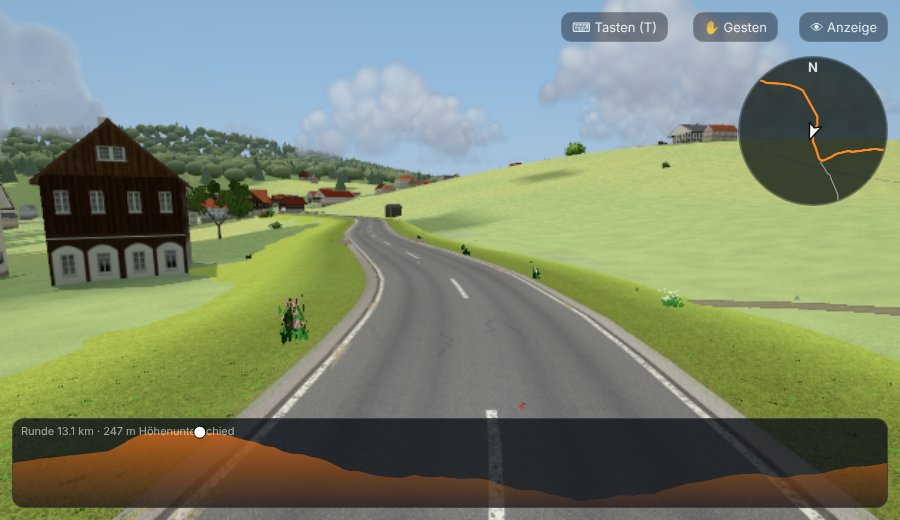
Jetzt: der Pfad läuft bis an die Fahrbahn

Dieselbe Stelle von oben

Nebenstraße: Asphalt mit Flecken, Flickstellen und Rissen statt gleichförmiger Kacheln
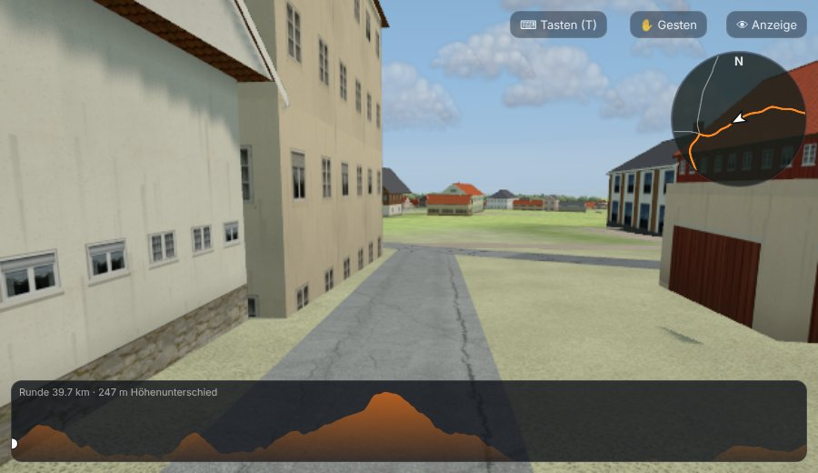
Schotterweg

Wiegetritt am steilen Berg: Gravel (Hände auf den Hoods) und MTB
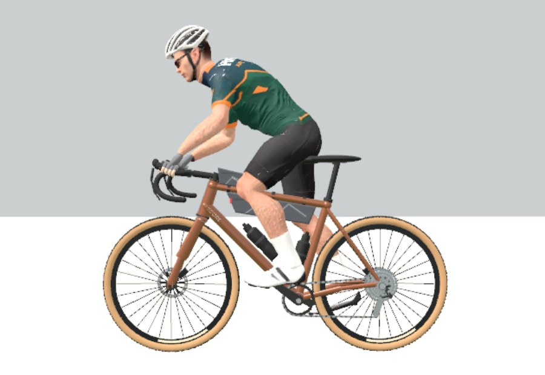

Die Radwahl im Menü (Welt, Fahrrad) zeigt jetzt das passende Rad mit eigener Sitzhaltung. Gravel: Bronze/Kupfer metallic, Skinwall-Reifen, höherer und kürzerer Rahmen, breiterer Lenker mit Flare, Hoods nach innen gedreht, Rahmen- und Oberrohrtasche, zwei schwarze Flaschen. MTB: mattes Dunkelgrün, orange Federgabel, Stollenreifen, gerader Lenker, aufrechte Haltung. Studiobilder ohne Welt.
Gravelbike von der Seite: aufrechter als auf dem Rennrad, Hände auf den Hoods

Gravelbike schräg von vorn: Taschen mit Hicore-Schriftzug, roter Zipper

Von vorn: Unterlenker nach außen ausgestellt (Flare), Hoods oben nach innen geneigt

Hände auf den Hoods, greifen genau am Griff

Mountainbike von der Seite

Mountainbike schräg: orange Federgabel, Stollenreifen
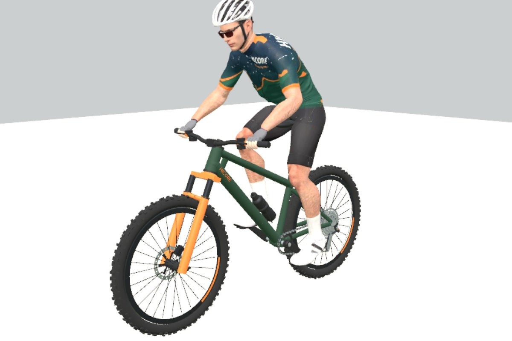
Gerader Lenker mit Griffen, Bremshebeln und orangen Klemmringen
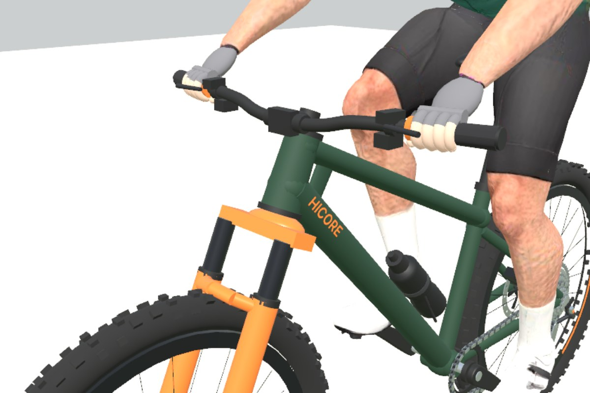
Straßen, Nebenstraßen und rund 1.900 km Feld-, Wald-, Fuß- und Radwege sind jetzt ein zusammenhängendes Netz. An jeder Kreuzung, auch im Wald, kommt ein Abbiegehinweis. Neu im Menü (Welt): Fahrrad. Das Rennrad biegt nur in Straßen und asphaltierte Wege ab, Gravel und Mountainbike überall. Der Rollwiderstand hängt von Rad und Untergrund ab. Auf Waldpfaden gibt es Wurzelstellen, die das Gravelbike stark bremsen. Brücken auf Wegen haben jetzt ein Holz- oder Betondeck mit Geländer.
Abbiegehinweis von der Hainstraße in einen Wiesenpfad (Mountainbike)

Nach dem Abbiegen: Fahrt auf dem Pfad
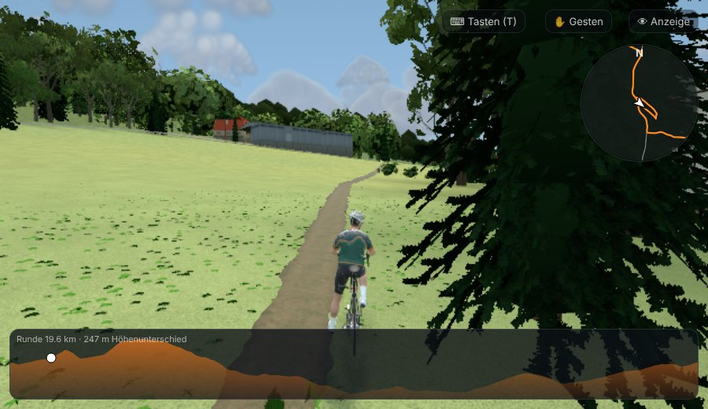
Holzbrücke auf einem Fußweg

Wurzelstelle auf einem Waldpfad

Rund 1.900 km Wege aus OpenStreetMap neu dabei: Feld- und Waldwege, Wiesenpfade, Fuß- und Radwege (ohne Gehsteige und Hofzufahrten). Befahrbar sind sie noch nicht. Alle Nebenwege haben jetzt eine Textur nach dem echten Untergrund aus OSM (Asphalt, Pflaster, Beton, Schotter, Erde, Gras, Waldboden, Fels), Texturen von Poly Haven. Feldwege mit grüner Mitte, Waldwege mit Waldboden, keine Bäume mehr mitten auf Wegen. Bei Schnee verschwinden sie wie der übrige Boden. Alter Stand zum Vergleich: ?oldways=1
Feldweg mit Grasnarbe in der Mitte

Erdweg am Waldrand (Waldboden)
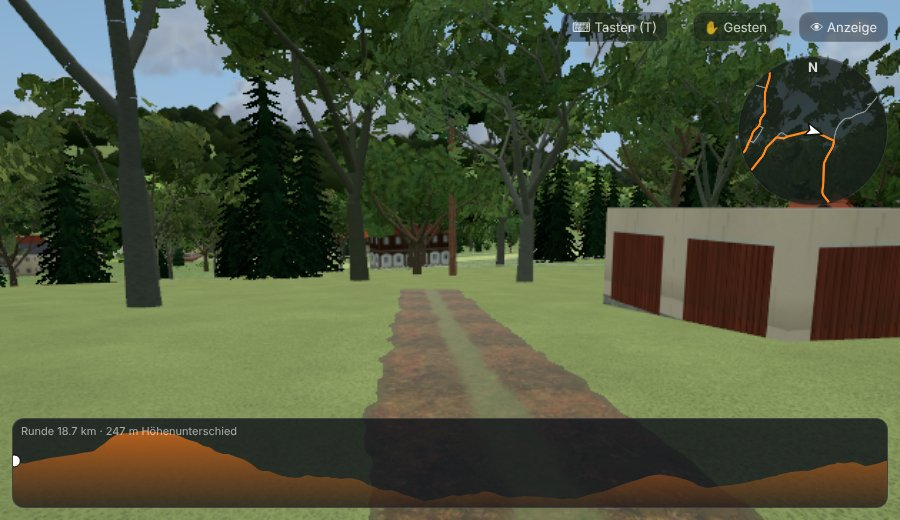
Schotterweg mit ausgefransten Rändern
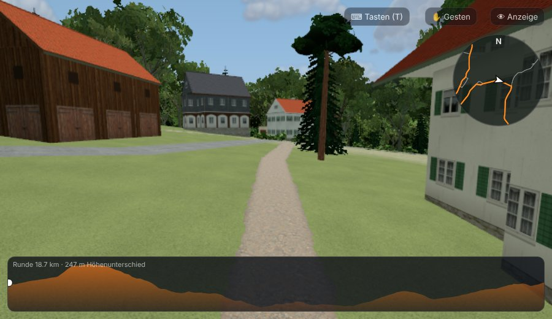
Asphaltierter Fußweg

Draufsicht Jonsdorf: Wege im Netz
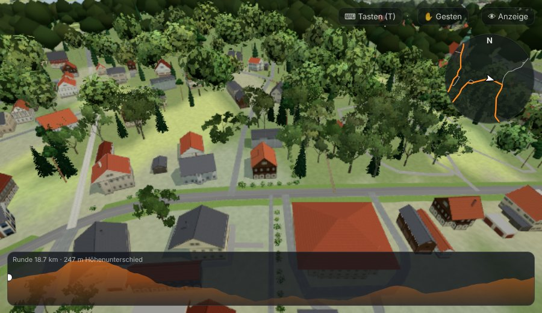
Vorher: Nebenwege als einfarbige helle Bänder
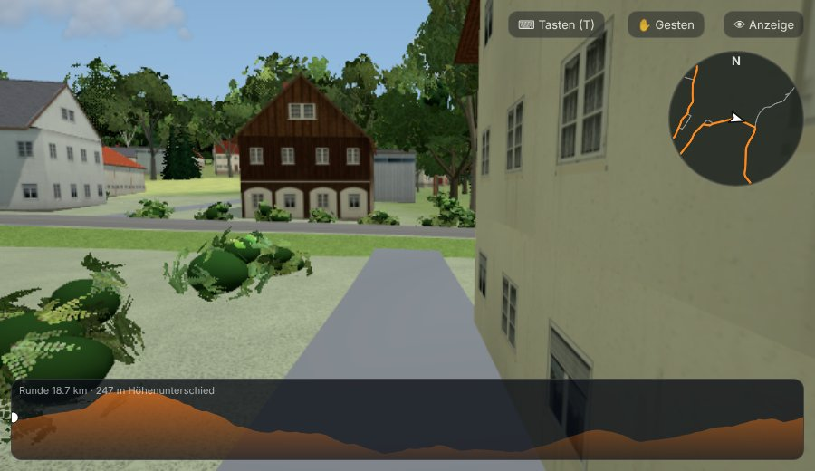
Schnellerer Start: Fahrer- und Radmodell laden als eigene Dateien, die Startseite ist 6 MB leichter. Autos und Shader werden im Ladebildschirm vorbereitet, damit beim ersten Auto nichts ruckelt. Neu im Menü: Auflösung automatisch anpassen (die FPS-Anzeige zeigt die Prozent). Ferne Mitfahrer verlieren Kleinteile, auf Tablets werden große Fahrzeugtexturen verkleinert.
Rücklichter nachts: sitzen jetzt genau auf den roten Lampen und folgen ihrer Form, mit Glow

Scheinwerfer nachts: an der Lampenposition statt davor schwebend

Fahrende Autos bei Schnee: Dach weiß, Scheiben frei
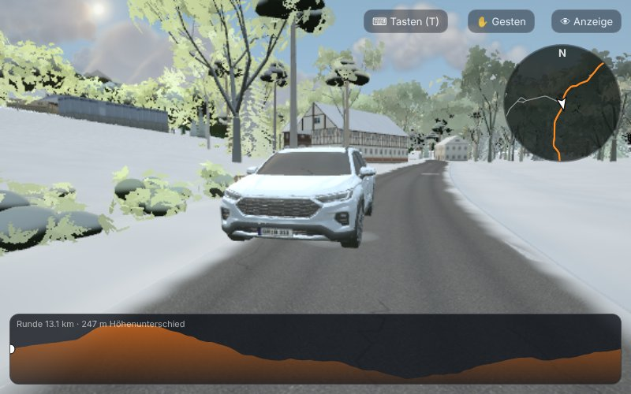
Kreuzung Waltersdorf/Bertsdorf: nur noch eine Einmündung und ein Wegweiser (der blaue Streifen daneben ist ein Bach)
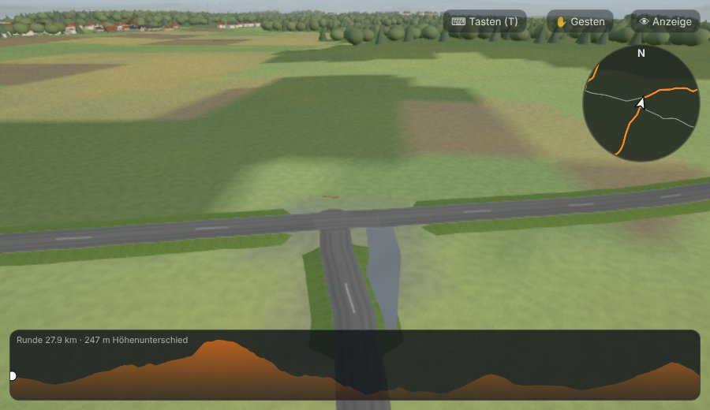
Laubbäume bei Schnee und Gegenlicht, vorher

Nachher: das gelbgrüne Leuchten gedämpft
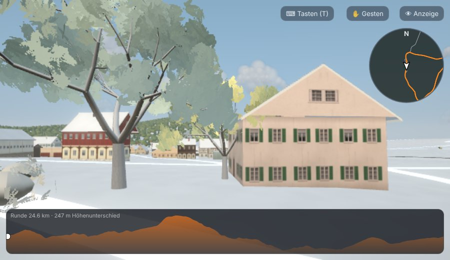
Neu im Menü: Wetter Schneefall und Graupel, dazu die Schneelage (keine, Flecken, angezuckert, viel, Tauwetter) und Straßen geräumt oder festgefahren. Jede Kombination geht. Bei echtem Wetter stellt sich die Schneelage nach der Schneehöhe von Open-Meteo selbst ein.
Viel Schnee bei blauem Himmel, Straße geräumt: Dächer weiß, Schatten bläulich aufgehellt

Dasselbe aus der Luft: Wald mit weißen Oberseiten, Gras unter dem Schnee verschwunden
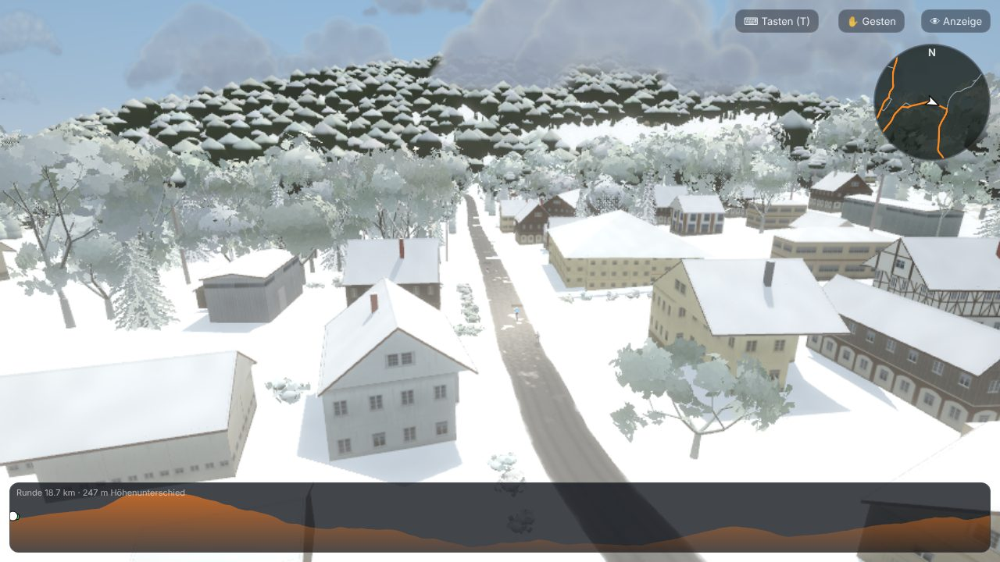
Schneefall, Straße festgefahren: weiß mit Fahrspuren, grauer diesiger Himmel, Flocken

Angezuckert: dünne Schicht, Gras und Dachziegel schimmern durch
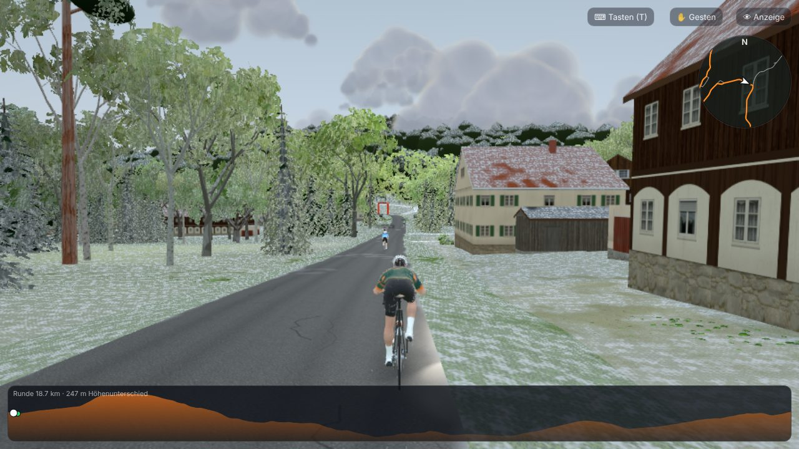
Tauwetter: Reste auf flachen und schattigen Stellen, Straße nass

Schneeflecken: nur vereinzelte Reste, in der Höhe (Lausche, Kamm) bleibt mehr liegen

Oben bisherige Bodentexturen, unten neu (Poly Haven): Asphalt dunkler und unregelmäßig gemischt, Wiese, Bankett
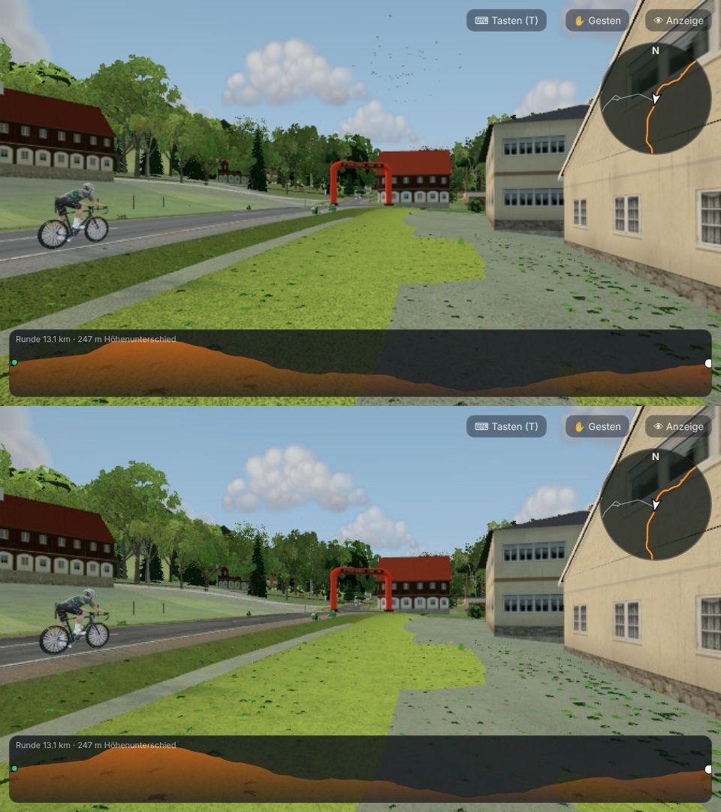
Kreuzung von oben, oben alt, unten neu: die Kreuzungsfläche hat jetzt dieselbe durchgehende Textur wie die Straße

Fernsicht über Oybin aus der Luft: Wald und Orte jetzt bis ca. 6 km statt Dunst ab 1,7 km

Blick von der Lausche-Straße: geschlossener Wald auf den Hängen, Häuser in der Ferne

Kirche Hainewalde nach deinen Fotos: Chor mit Spitzbogenfenstern und grauen Eckquadern
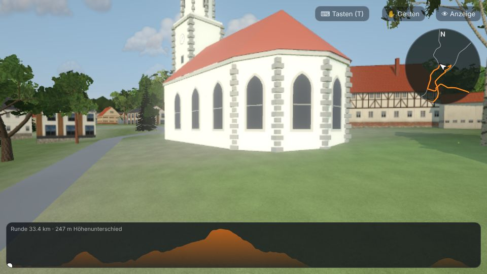
Turm mit Quaderecken, Uhren, Glockengeschoss, Haube, Laterne und Wetterfahne
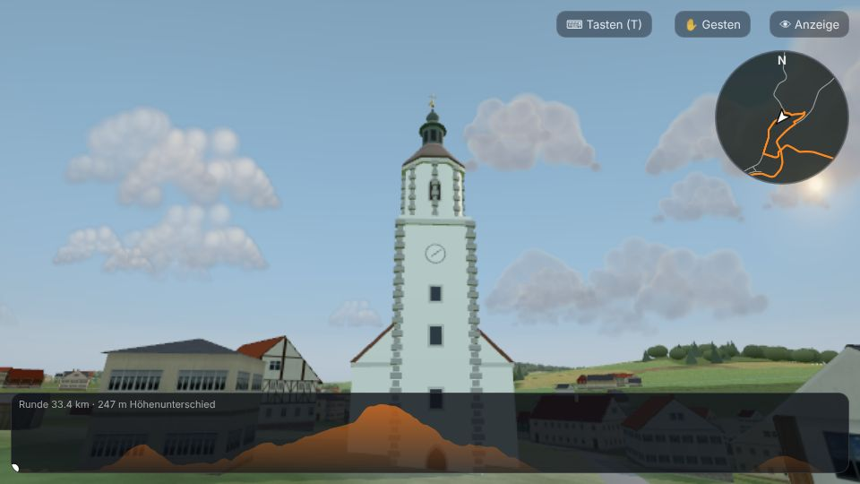
Kanitz-Kyaw'sche Gruft als 3D-Modell aus den Fotos (Higgsfield)

Parks und Rasen am Ring nach OSM, Fuß- und Radwege sichtbar, lockere Baumgruppen statt Pflaster
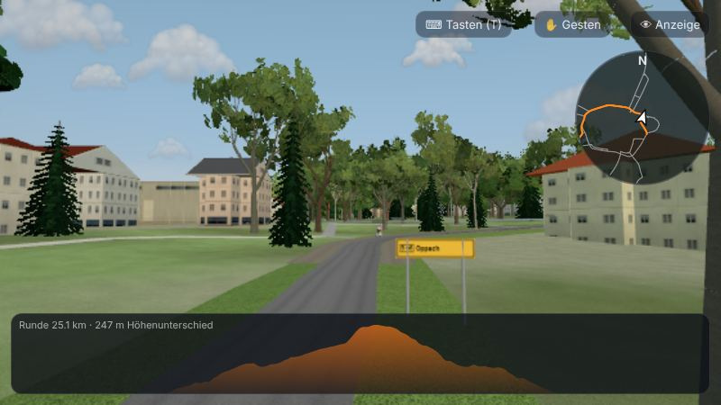
Bahnübergang Hörnitzer Straße: Halbschranken unten, Lichtzeichen rot, Läutewerk; der Fahrer hält davor
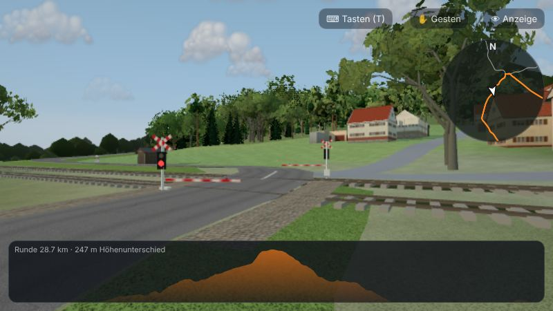
Regionalzug fährt durch (zweiteiliger Triebwagen, ohne echtes Logo)

Triebwagen von vorn (Bug mit Scheibe, Lichtern und Zierstreifen)

Eisenbahnbrücke über die B 96 Neusalzaer Straße (nach OSM)

Eisenbahnbrücke über die Oststraße in Zittau

Sicherer am Seil, Rucksack-Wanderin und Marlies jetzt alle mit Skelett

Kletterer jetzt als Figur mit Skelett, greift und tritt abwechselnd

Am Kelchstein kann man neben der Wanderin anhalten und per Sprechknopf mit ihr reden

Jetzt zufällig platziert, alles steht sauber auf der Straße, Polizist als Figur mit Skelett

Von links: Spaziergängerin stehend, Läufer beim Gehen, Spaziergängerin beim Gehen, Läufer beim Rennen

Links Gehen 5 km/h, Mitte Joggen 11 km/h, rechts Rennen 19 km/h
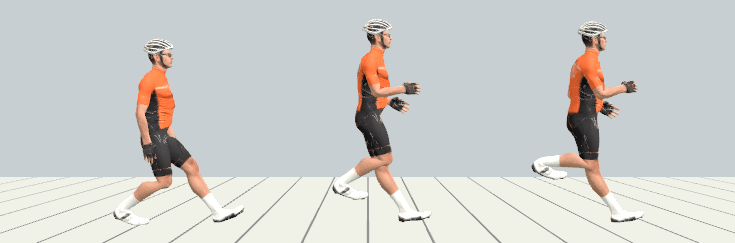